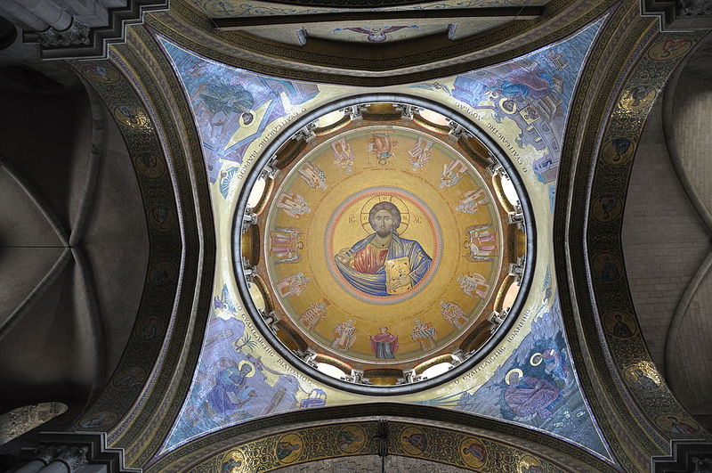
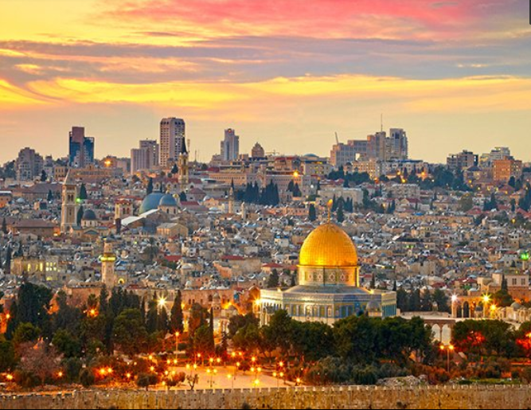

is perhaps the only city in the world that is considered historically and spiritually significant to Jews,Christians, and Muslims alike.
The city of Jerusalem is known in Arabic as Al-Quds or Baitul-Maqdis("The Noble, Sacred Place"),and the importance of the city to Muslims comes
as a surprise to some Christians and Jews.
Jerusalem is considered to be the cultural, spiritual and national center of the Jewish people and the Jewish state, it is also a holy city to Islam and Christianity
and is also one of the oldest cities in the world. The City of Gold, is a fascinatingly unique place where the first century rubs shoulders with the twenty-first century
each jostling for legitimacy and space,
and where picturesque "old" neighborhoods nestle against glistening office towers and high-rise apartments.
It is one of those places which has to be seen to be believed.
Districts
Jerusalem is a large city and it can be divided up into districts:
The Old City and its Walls form a UNESCO World Heritage Site. This tiny ancient city is home to holy sites for Jews, Christians, and Muslims, and is truly breathtaking.
West Jerusalem is the Israeli part of Jerusalem, also known as New Jerusalem; it is the modern commercial heart of the city, having become the focus for development in the city from the time of the creation of the Jaffa-Jerusalem Railway in 1892. To preserve the Old City, the Ottomans would not allow the train to reach its walls, so the Kahn station was located to the west.
East Jerusalem is, roughly, the Eastern side of Jerusalem. East Jerusalem is made of territory taken by Israel from Jordan during the Six Day war of 1967. The territory was annexed when the war ended and Israeli law is imposed on it, unlike the West Bank which is considered by Israeli law to be under military rule. Israeli law also considers East Jerusalem to be part of Israel; these claims cause considerable controversy in the international community where they are unrecognized. The city is now home to approximately 200,000 Israeli settlers while most of Jerusalem's Muslim and Christian populations of approximately 250,000 have long lived here.
Me'a Shearim is the area of Jerusalem inhabited largely by ultra-Orthodox Jewish people, a place where modest dress is required. The area looks like a 19th century Russian town with largely Yiddish speaking inhabitants.
The German Colony is a West Jerusalem neighbourhood southeast of the city centre. It's a wonderful place to drink coffee and to eat in restaurants. You may hear more "Anglos" speaking English than Hebrew on these streets. It is located around Emek Refaim street.
Ein Kerem is a (relatively) secluded neighbourhood in West Jerusalem that maintains a village atmosphere. It is surrounded by picturesque hills dotted with olive and cypress trees, home to artists and sculptors who have opened numerous galleries. Several churches are built on the site believed to be the birthplace of John the Baptist. Before 1948, the site was an Arab village called 'Ayn Karim .
More about Jerusalem!
Understand
acting as a border city between Israel and Palestine(Bordering the Palestinian cities such as Abu Dis and Ramallah). Jerusalem is considered holy to the three major Abrahamic religions: Judaism, Christianity, and Islam. it is also the cultural, historical and national center of the Jewish and palestinian people. Jerusalem is the third-holiest city in Islam and is also home to a number of significant and ancient Christian landmarks. It is also a city with a very violent past, as it has been severely damaged several times, from the Roman wars, that ended with the burning of the city, to the 1967 Six Day War. all religious, and socioeconomic groups are represented here. The walled area of Jerusalem, which until the late nineteenth century formed the entire city, is now called the Old City and became a UNESCO World Heritage Site in 1982. It consists of four ethnic and religious sections — the Armenian, Christian,Muslim , and Jewish . Barely one square kilometer, the Old City is home to several of Jerusalem's most important and contested religious sites including the Western Wall and Temple Mount for Jews, the Dome of the Rock and al-Aqsa Mosque for Muslims, and the Church of the Holy Sepulchre for Christians.
Surrounding the Old City are more modern areas of Jerusalem. The civic and cultural center of israel extends from western Jerusalem toward the country's other urban areas to the west, while areas populated by Arabs can be found in the northern, eastern and southern districts.
Archaeological findings prove the existence of development within present-day Jerusalem as far back as the 4th millennium BCE, but the earliest written records of the city come in the Execration Texts (c. 19th century BCE) and the Amarna letters (c. 14th century BCE). According to Biblical accounts, the Jebusites, a Canaanite tribe, inhabited the area around the present-day city (under the name Jebus) until the late 11th century BCE. At that point (c. 1000s BCE), the Israelites, led by King David, invaded and conquered the city, expanding it southwards and establishing it as the capital of the United Kingdom of Israel and Judah (the United Monarchy). It was renamed at this time as Yerushalayim (Jerusalem), a name by which it is still referred to today.
Religion
Jerusalem is considered home by large numbers of adherents to three of the four Middle Eastern monotheistic faiths: Judaism, Christianity, and Islam. Adherents of these faiths have tended historically to congregate in various neighborhoods of the city, with considerable overlap.
Jerusalem has an amazing array of attractions for the traveler to see:-
Mar Elias Monastery - Greek Orthodox Monastery that built over the tomb of the Greek Orthodox Bishop of Jerusalem called Elias, Bethlehem and Beit Jala residents used to come everey year to visit his tomb for centuries. another tradition says that Prophet Elijah (Elias) used to rest there when he escaped from Jezebel.
Tantur theological center - a Christian theological center in Southern Jerusalem, opened for all the variation of Christianity.
St. Simeon monastery is a Greek Orthodox monastery (originally Crusader) in the neighborhood of Katamon, built over what believed to be the house and even the burial place of St. Simeon (Gospel of Luke)
Ramat Rachel archaeological site is an archaeological site dates back from biblical times to first century BC
Monastery of the Cross - a Greek Orthodox monastery surrounded by walls (the current monastery was built in the crusader period on the remains of the 4th monastery), according to the Christian tradition, the monastery built over the site of the trees that Jesus's Cross made from. Only 4 monks living there today
The Israel Museum is the largest museum in Israel. The Museum contains the "shrine of the book" where the dead sea scrolls are kept. It also has a large scale model of Jerusalem in ancient times. It has large archeology and art sections that were renovationed and reopened in 2010.
Yad Vashem is Israel's Holocaust museum.
The Garden Tomb on Nablus Road, East Jerusalem marks what many believe is the location of Calvary and the tomb of Jesus. The tomb is located in a lush big garden which is a good break away from the hustle and bustle of East Jerusalem.
The Palestinian heritage museum
is within the American Colony complex in East Jerusalem. Located in a 200-years-old Palestinian building, the museum hosts permanent and temporary exhibitions on Palestinian culture, folklore and history. The permanent exhibition include a room dedicated to the Palestinian Nakba, a floor dedicated to traditional Palestinian dresses and Jewelery, as well as a laboratory for the restoration of old artifacts.
Old City — the atmospheric historical core of Jerusalem surrounded by Ottoman period walls, filled with sites of massive religious significance and a bustling approach to life.

The Church of the Holy Sepulchre is the end of the Via Dolorosa (Way of the sorrows) in the Christian quarter of the Old City. It is the most holy Christian spot in the world. The first church on the site was built by Queen Helena, mother of the emperor Constantine, the Holy Sepulchre is Jerusalem's number 1 site for Christian pilgrims and is consequently horribly crowded. Expect to queue for an hour or more to enter the tiny tomb chamber.
Al-Aqsa Mosque is the point from where the prophet of Islam, Mohammad (PBUH), ascended to heaven.

Qubbat Al-Sakhra (Dome of the Rock) - located in the middle of the sanctuary opposite of the Al-Aqsa Mosque, is probably the most known landmark of Jerusalem with its golden dome and octagonal blue walls that are adorned with Arabic calligraphy of Koranic verses. The Dome of the Rock is also labelled the most amazing Islamic building in the world.
The Jewish quarter in the Old City was completely re-built in 1969 after the 1967 Arab-Israeli War. It still holds many ancient masterpieces such as the Cardo (700 BC), Burnt House (70 AD), and Western Wailing Wall (50 BC). All of which are among the most holy Jewish sites in the world. Definitely worth a visit, especially the western wall. The Jewish Quarter also includes The Western Wall Tunnel and the archaeological park at Davidson Centre (the Ophel). Also interesting are The Hurba Synagogue and The Herodian Quarter.
Via Dolorosa - passing through Bethesda (crusader church and Roman excavations), Franciscan Archaeological Museum and Les Seurs de Sion Monastery with its underground Roman Street.
Damascus Gate is the most elaborate one. The vegetable market borders it. It is also near Jaafar - Jerusalem most renowned sweets store.
Lady Tunshuq Palace and Tomb
Syriac Church, Maronite Church
The Armenian Cathedral and Museum
The Indian Hospice, The Austrian Hospice, The Armenian Hospice
The Tower of David (Citadel) at Jaffa Gate, the museum of town history
Murestan Square with the Lutheran Church of the Redeemer
Mount of Olives with numerous monuments including: Kidron Valley Monuments [BEWARE 'helpful locals scam' at the southern end of Kindron valley where the steps up the hill to the City of David is. , Maria's Tomb, The Ascension Chapel, Domini Flevit Church, Church of All Nations, Tombs of the Prophets, Jewish Cemetery, Pater Noster Church, The Muscoviya, The Tomb of Lazarus (in Al Eizariya village at the south-eastern slope of the Mount of Olives)
Zion Mountain with several monuments including: Hagia Maria Sion Abbey (Dormision Church), Schindler's Tomb, Chamber of the Holocaust (Martef HaShoah), David's Tomb and Room of the Last Supper